| Transects | Sites |
|---|---|
| 6 | 33 |
TCRMP 2025 Benthic QAQC
2026-03-27
QAQC for TCRMP coral health and algae height data for 2025. Suggestions for additions and improvement are welcomed.
Luckily, the data entry system catches a lot of easy mistakes like mispellings. We just have to go through the mistakes it might not catch. When we catch some that are fixable, change online and export again, or if the online database has already been cleared, change directly in the data.
Overview
How big are the datasets?
Coral health 2025 has 3879 corals.
| Transects | Sites |
|---|---|
| 5 | 2 |
| 6 | 31 |
Date ranges
Coral health took place between dates: 2025-10-10, 2025-12-03
Algae heights took place between dates: 2025-10-10, 2026-01-30
Notes
Are there any notes we should know about?
Coral health notes: [1] "SWP added DICT (1) to first coral (PAST) added (1) new mortality to first OANN (51-68-70)"
[2] "SWP Added two that were missing PAST (10-10-3), OANN (110-90-100)"
[3] "SWP changed OX (3-3-1) to OFAV because that it what it says on the data sheet but you might want to change that back if you did that on purpose"
[4] "SWP no change"
[5] "SWP changed Past (3-2-1) VP from 2 to 3."
[6] "Proofed 01/25/2026 GAC"
[7] "SWP added SRAD (1-1-1) 80P SED(1) Added 3 more SRAD after this one"
[8] "SWP added one SRAD (1-1-1) SED 10"
[9] "SWP added MCAV (2-1-1) w/TURF 1 added SSID (19-14-3) changed PAST (8-6-3) CPHILA to JANIA"
[10] "SWP added (10P) to SSID (13-12-4) Transect 5"
[11] "No change"
[12] "SWP NO Change"
[13] "SWP No change"
[14] "proofed 02/21/26 ALS"
[15] "PAST (16,14,17 cm) added LOBO 1, added P to edge focal on PAST (14,13,12 cm), PAST (2,2,2cm) changed height from 1 to 2 -ALS"
[16] "PAST (12,12,4cm) added \"paling and bleaching from damsel bites\" in notes, added \"recent mort from\" to notes on PAST (7,5,5) -ALS"
[17] "SWP changed last OFAV recent mortality from 2 to 4"
[18] "PAST (8,6,5cm) added 2 old mortality and 1 recent -ALS"
[19] "proofed 02/20/26 ALS"
[20] "PAST (9,7,15) removed DICT 3 and SCX 20, added SSID (20,15,10) and PAST (2,1,1) -ALS"
[21] "PAST (10,9,6) changed recent mortality from 3 to 30 -ALS"
[22] "SINT (8,6,2cm) removed SED 3, 20P, and 10 old mortality, PAST (10,7,8cm) removed FIL 4 -ALS"
[23] "wrote recent mort from predation for OA (70,40,55) -ALS"
[24] "PAST (5,3,4 cm) changed DICT from 4 to 7 and added recent mortality from predation/bites in notes, SSID (2,2,1) added recent mortality from predation/bites in notes -ALS"
[25] "MDEC (12,10,5) changed ARTCALG to CALG -ALS"
[26] "PAST (5, 4.5, 3) changed SARG to SSID and DICT to MACA for interactions -ALS"
[27] "PAST (1,1,1cm) changed 20 old mortality to 20 recent -ALS"
[28] "PPOR (20,18,13cm) changed paling from 20 to 10, OFRA (23,12cm) changed height from 4 to 20 cm -ALS"
[29] "SSID (12,10,5) added MADSP 10 as interaction, should be MAUR, but that wasn't an option when I typed it in -ALS"
[30] "PAST (20,15,6 cm) changed height from 1 to 6, old mortality from 20 to 70, and added a recent mortality of 10, SRAD (2,2,2) changed LOBO from 10 to 1, PAST (1,1,1) changed DICT from 1 to 3, OFAV (32,26,22) changed DICT/HALI 5 to DICT 5 and changed CLIONA 14 to 1 (there's no number on the data sheet), OFRA (26,20,15) changed DICT/LOBO 1 to LOBO 1, SSID (1,1,1,) changed DICT/HALI to DICT -ALS"
[31] "added SSID (13,10,7cm), SSID (3,2,1cm) changed pale from 35 to 25, added PPOR (15,10,15cm) -ALS"
[32] "MALC (10,10,32) changed ARTCALG to CALG -ALS"
[33] "SSID (11,10,1) added MADSP 1 as interaction, is supposed to be MDEC, but that isn't an option, OFRA (35,33,30cm) added 5P -ALS"
[34] "Deleted MCAV (9,6,2cm) was on belt, not intercept -ALS"
[35] "PAST (7,5,3 cm) got rid of old mortality 2, SSID (3,3,0.5cm) changed it from SRAD TO SSID, changed PAST (1,1,1) to SSID (1,1,1) and changed DICT 25 to 5 -ALS"
[36] "Proofed 01/26/2026 GAC"
[37] "Changed the 1st PAST from Dict 2 to Dict 15 01/26/2026 GAC"
[38] "deleted 20% old mort on 3rd entry (OFRA) 01/26/2026 GAC"
[39] "proofed 02/23/26 ALS"
[40] "OFRA (10,8,3) changed length from 19 to 10 -ALS"
[41] "PAST (7.5,6,5cm) changed ARTCALG to CALG, OFAV (16,14,7cm) there's no number next to LOBO on the data sheet, but 4 was entered so i left it -ALS"
[42] "EFAS added \"bleaching\" to \"under lobo\" in the notes -ALS"
[43] "OFRA (43,37,5) changed lobo from 22 to 2, ALAM (33,32,5) changed length from 32 to 33, OFRA (110,100,100) changed DICT 1 to ICING 1 -ALS"
[44] "ALAM (40,25,8) changed width from 28 to 25 -ALS"
[45] "wrote predation in notes of OFRA (28,26,7cm), OFRA(45,31,8cm) changed LOBO from 5 to 4 -ALS"
[46] "added Lobo 1 to 1st entry 01/26/2026 GAC"
[47] "cs"
[48] "CLG Proof - 2/11/2026"
[49] "CLG Proofed-2/9/2026"
[50] "Lots of top mort on OA, prob from BL (CLG Proofed-2/9/2026)"
[51] "lots of top mort on OA, prob from BL (CLG Proofed-2/9/2026)"
[52] "CS"
[53] "OFRA (95,62,90) changed length from 955 to 95 -ALS"
[54] "added DCOR 5 to OFRA (64,48,16cm) -ALS"
[55] "SINT (15,12,18 cm) added LOBO 8 -ALS"
[56] "OFRA (70, 40, 12) changed old mortality from 36 to 30, AGRA (14,10,6) changed the note BL edge/focal to P edge/focal - ALS" Algae heights notes: [1] "SWP no change"
[2] "SWP removed one DICT too many"
[3] "Proofed 01/25/2026 GAC"
[4] "Added the two Hali numbers 01/25/2026 GAC"
[5] "Rami - 0.1 cm SWP no change"
[6] "proofed 02/20/26 ALS"
[7] "changed LOBO from 0.2 to 2 cm -ALS"
[8] "added all the DICT to transect -ALS"
[9] "CCA and ramicrusta at 1 pt, changed LOBO from 0.4 to 0.9 cm -ALS"
[10] "SWP \r\nchanged on FIL to FILSED \r\nremoved one FILSED"
[11] "SWP no change \r\n"
[12] "SWP \r\nremoved one FILSED"
[13] "proofed 02/13/26 ALS"
[14] "Proofed 01/25/2026"
[15] "unidentified alga = Penicillus, proofed 02/13/26 ALS \r\n"
[16] "Changed MACA to SCX (0.5cm) -ALS"
[17] "Changed DYPT to DICT (1.1cm) -ALS"
[18] "Changed MACA to SCX (0.3 cm)-ALS"
[19] "added a 2 to Dict 01/25/2026 GAC"
[20] "wrote sed on data sheet, but meant fil\r\nProofed 01/25/2026 GAC"
[21] "Pey - 3 times, proofed 02/20/26 ALS"
[22] "CCA at 1pt, changed LOBO to DICT (1.0cm) -ALS"
[23] "Proofed 01/26/2026 GAC"
[24] "added a LOBO 1.2 01/26/2026 GAC"
[25] "cs"
[26] "CLG Proof - 2/23/2026"
[27] "CCA at 1 pt,\r\nproofed 02/13/26 ALS"
[28] "RAMI = 1; PEY = 1\r\nSWP no change"
[29] "PEY = 5\r\nSWP no change"
[30] "PEY = 3\r\nSWP no change"
[31] "PEY = 1\r\nSWP no change"
[32] "cca at 2 pts\r\nProofed 01/26/2026 GAC"
[33] "pey at 4 pts \r\nProofed 01/26/2026 GAC"
[34] "pey at 1 pt\r\nCCA at 3 pts\r\nProofed 01/26/2026 GAC"
[35] "pey at 4 pts\r\ncca at 1 pt\r\nProofed 01/26/2026 GAC"
[36] "added a 0.4 LOBO 01/26/2026 GAC"
[37] "PEY - 3, removed an extra LOBO 0.3 and LOBO 0.2 -ALS" Corals
Occurrence
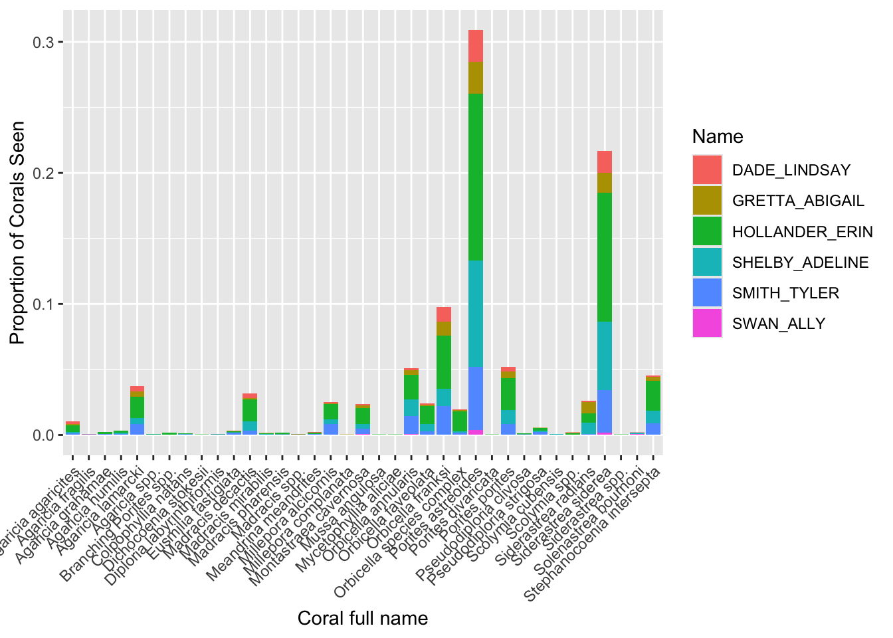
Abundance
Sizing
Size Summaries
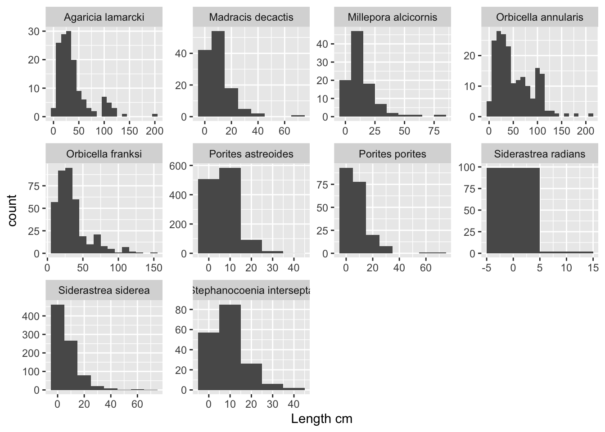
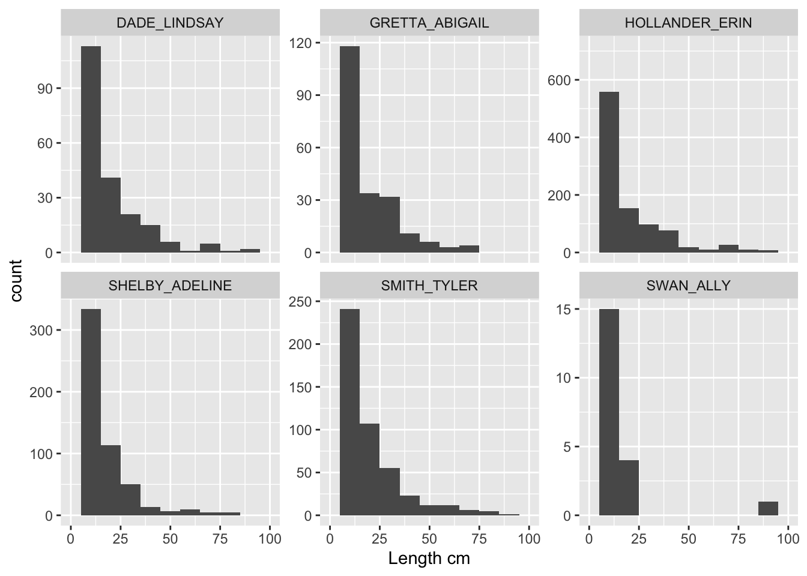
Size Flags
There were 1.8% of coral observations flagged on length, and 2.6% of coral observations flagged on height.
Warning: There was 1 warning in `mutate()`.
ℹ In argument: `flagL = case_match(flagL, "yes" ~ 1, "no" ~ 0)`.
Caused by warning:
! `case_match()` was deprecated in dplyr 1.2.0.
ℹ Please use `recode_values()` instead.Mortality
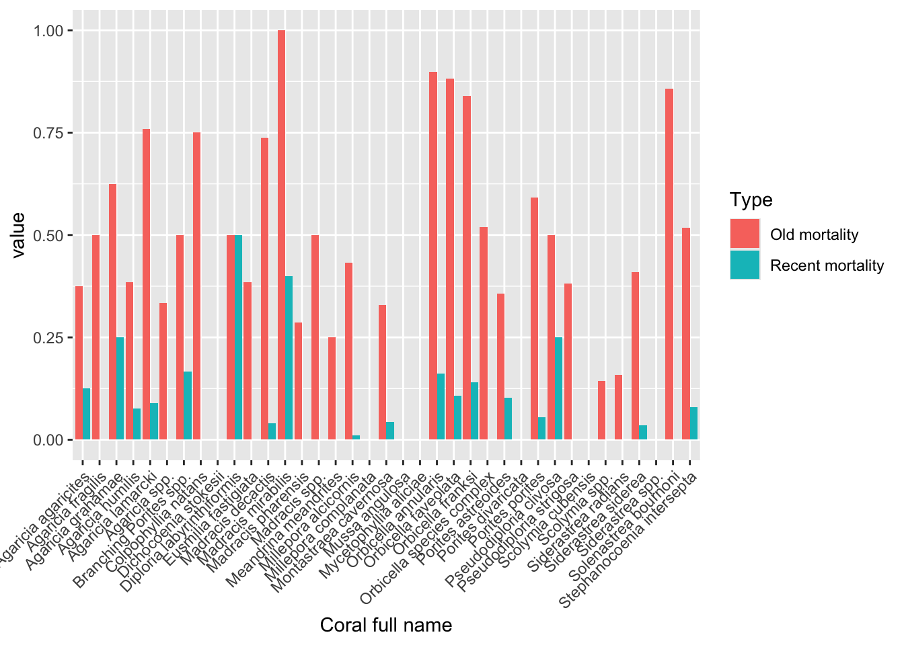
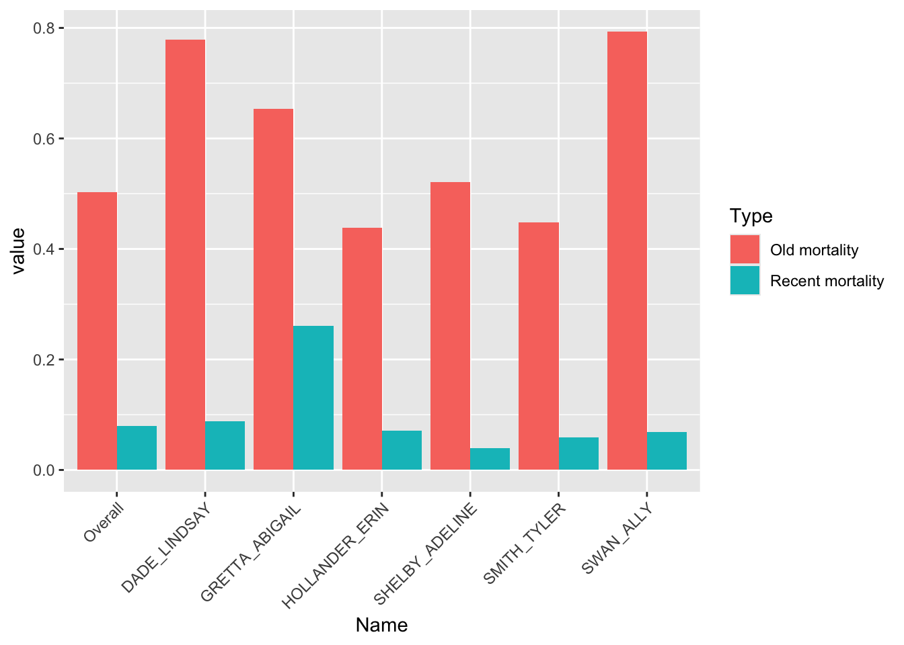
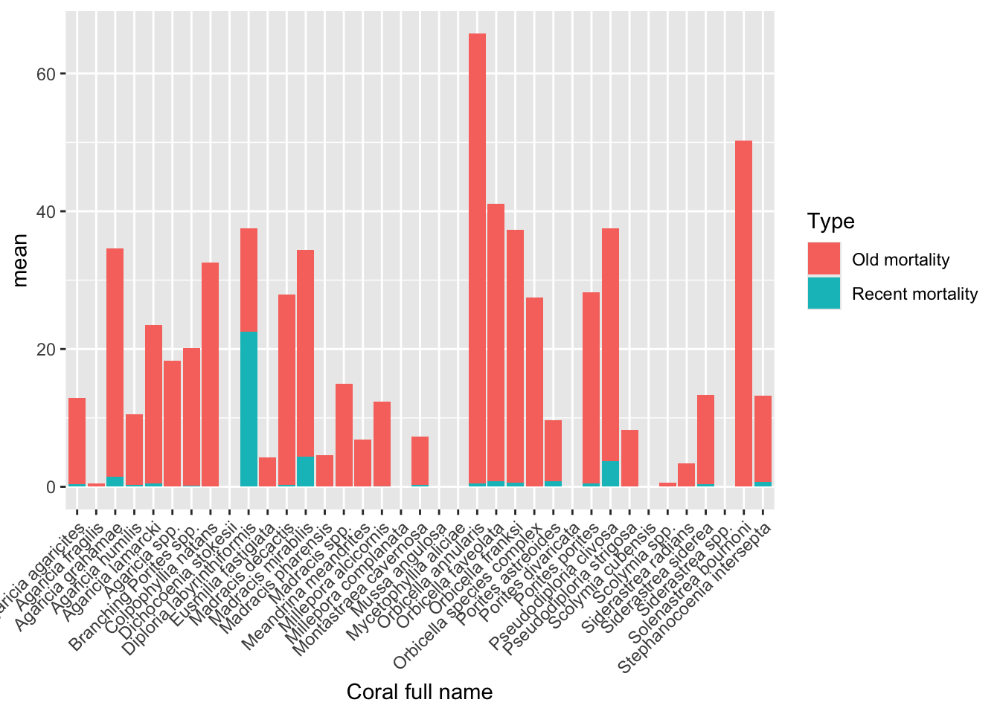
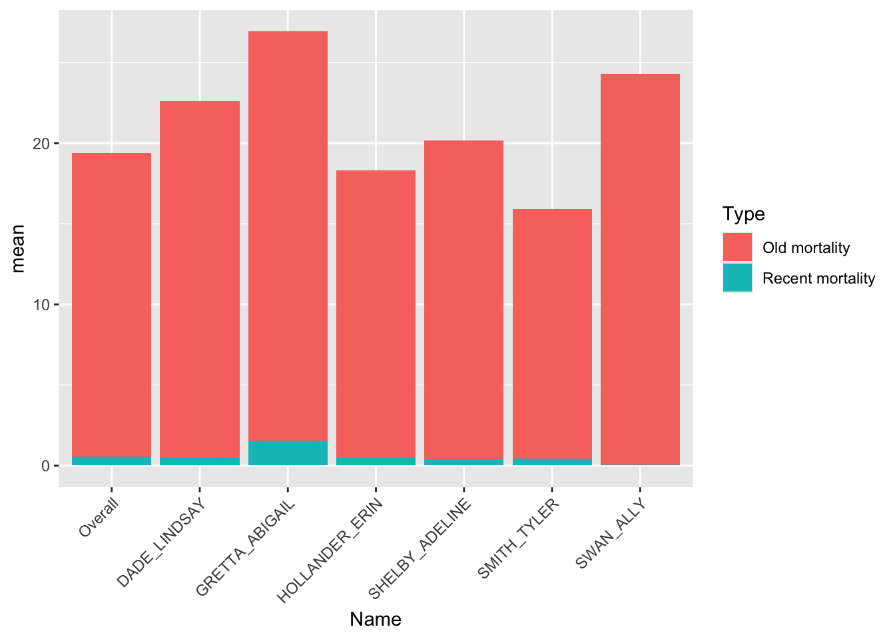
Bleaching
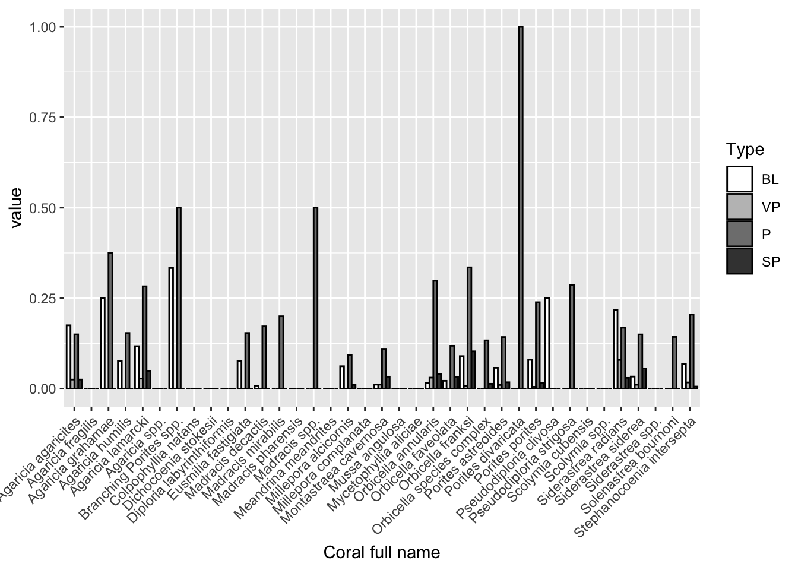
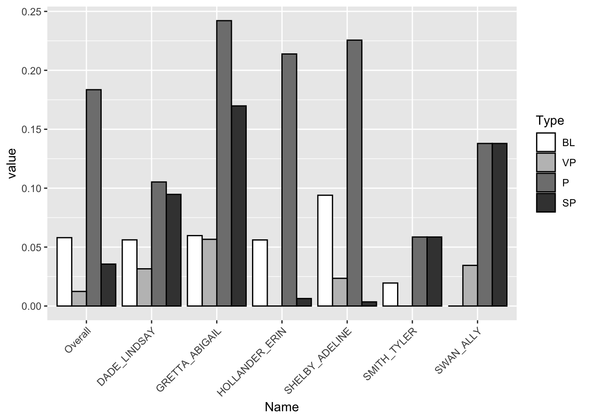
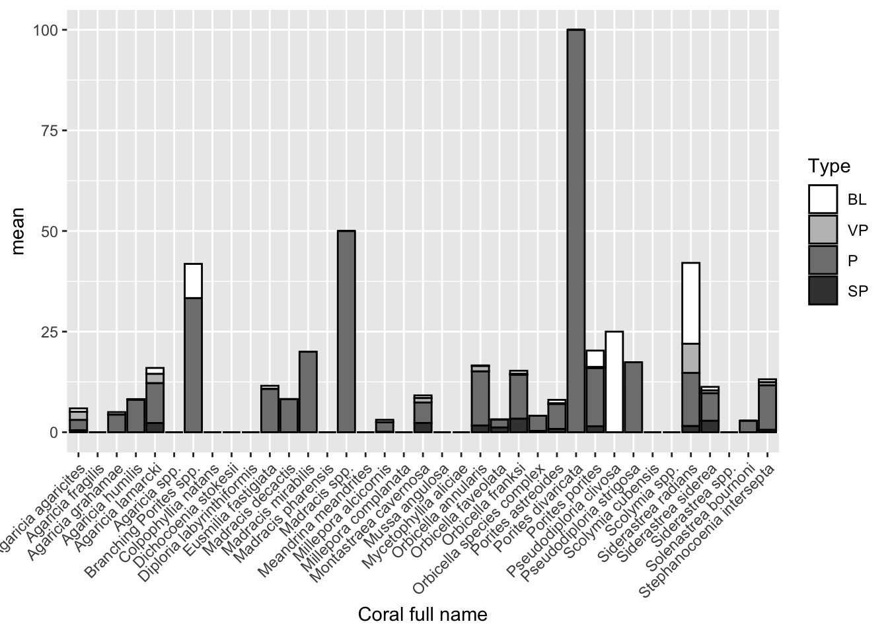
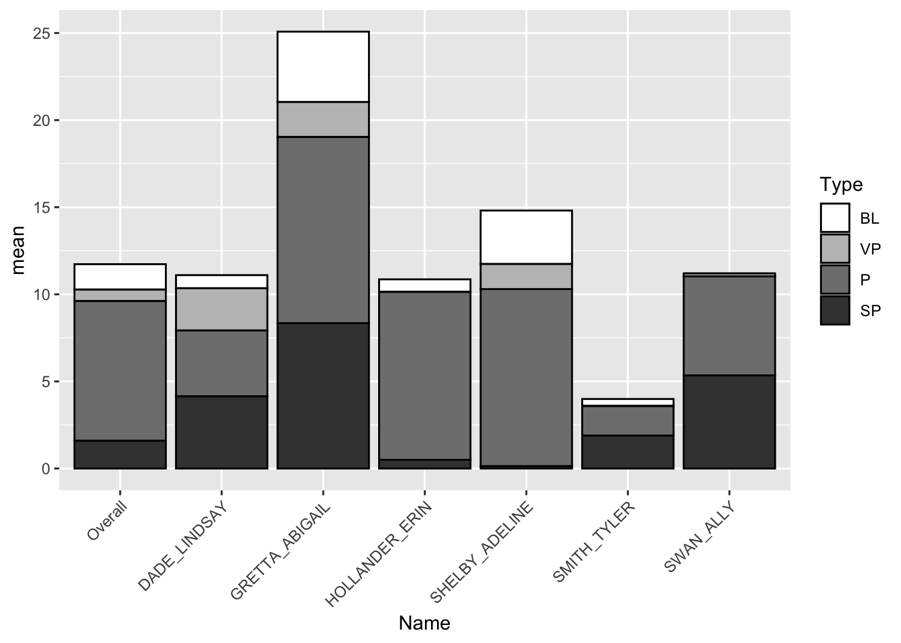
Interactions
What were the most common interactions and their average values?
Algae Heights
Abundance
Sizing
Let’s look for any LOBO > 4 cm. If they match the datasheet and are plausible, leave them as-is.
Let’s also look for any FIL or FILSED > 2 cm. If they match the datasheet, consider changing to MACA.
Changes Made
- Erin
- removed accidental “NOALGAE” points
- Sarah
- changed 7 cm SRAD by Abi at Coculus to SSID
- changed all ICING values to 1 (presence/absence)
- changed 5 cm LOBO by Ally at Black Point to 2 cm
- changed 3 cm FIL and FILSED by Erin and Tyler to 0.3 cm